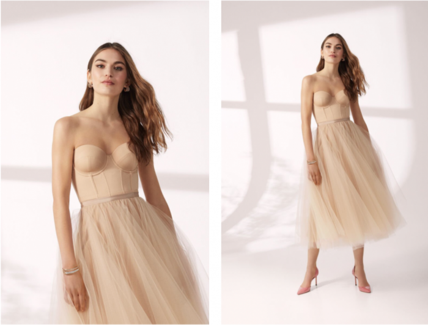
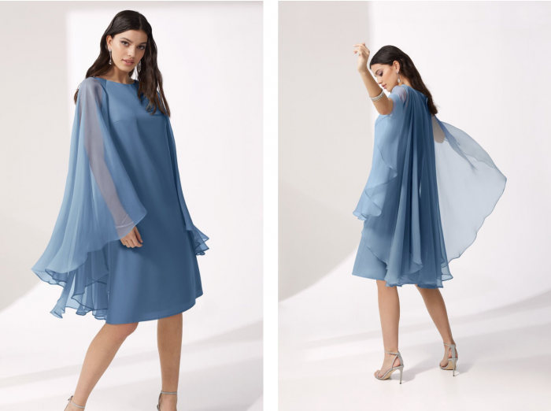
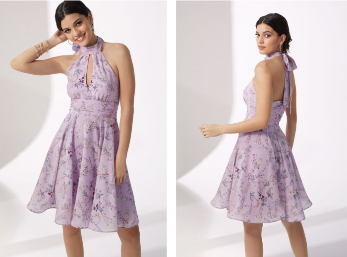

Short elegant dresses: where to find the best party dresses?
Here we are girls, finally that moment we have been waiting for more than a year is coming: weddings, parties and events will resume. I am super excited to resume my life as always, celebrate with my friends and get excited for them. This is why today I decided to talk to you about formal dresses : here are some tips on where to find them.Those who have followed me for a long time know that I love short elegant dresses and every time I always go to choose my party dresses from Atelier Emé, an important Italian brand specialized in the creation of wedding and ceremony dresses, known above all for its use of fine fabrics and hand-made decorations.
They are all beautiful dresses, every time I start dreaming, especially when I see the “Party” collection dedicated to formal dresses, perfect both for wedding guests and also for other situations where a particularly sophisticated outfit is required. Do you remember the pink dress I wore for my birthday in 2019 ?! Here, just to make you understand the beauty and refinement of the materials, but also of the style ... Now I will immediately show you all my favorite dresses that I recommend for ceremonies or parties, also explaining some details about the material or style and telling you what the more I like each one.
This is one of my favorites… the Bustier suit in matte satin: it looks like a dress, but it is a suit made up of a bodice and skirt; I love the tailored cuts and the boning that enhance the silhouette and waistline. Not to mention this wonderful and fluffy midi skirt in light tulle finished at the waist with a thin grosgrain belt. I would say that it is a true princess model, for a candlelit evening or for a nice 18 year old party, but also for an outdoor party.
Another beautiful model: Short dress in cady and chiffon, almost as if it were a refined cloud… every time I wear a dress by Atelier Emé, I immediately feel like a princess. This model is perfect for any ceremony, thanks to the wide chiffon sleeves dropped from the shoulders like ethereal stole-effect drapes. Another dress among my favorites from the 2021 party breakfast is the Short Dress in Floral Print Silk Crêpe.
Girls this dress is very similar to the one I wore in Tuscany, do you remember? I recommend it to all romantic people like me… This floral print is gorgeous and this model is suitable for different types of bodies. The halter neckline with a delicate drop on the décolleté closes in a precious bow that enhances the neckline of the back. The draped basque outlines the waistline from which a full skirt opens. “Girls, then, if you had to choose between these 3 Atelier Emé dresses, which one would you choose? Remember that you can try on all their clothes in the ateliers: they have about 44 stores located in the main Italian cities. "
Short elegant dresses: where to find the best party dresses?
Here we are girls, that moment we have been waiting for more than a year is finally coming: weddings, parties and events will resume. I am super excited to resume my life as always, celebrate with my friends and get excited for them. This is why today I decided to talk to you about formal dresses: here are some tips on where to find them. Those who have followed me for a long time know that I love short elegant dresses and every time I always go to choose my party dresses from Atelier Emé, an important Italian brand specialized in the creation of wedding and ceremony dresses, known above all for its use of fine fabrics and hand-made decorations. They are all beautiful dresses, every time I start dreaming, especially when I see the “Party” collection dedicated to formal dresses, perfect both for wedding guests and also for other situations where a particularly sophisticated outfit is required. Do you remember the pink dress I wore for my birthday in 2019 ?!
Here, just to make you understand the beauty and refinement of the materials, but also of the style … Now I will show you immediately all my favorite dresses that I recommend for ceremonies or parties, also explaining some details about the material or style and telling you what I like most is each one. This is one of my favorites … the Bustier suit in matte satin: it looks like a dress, but it’s a suit made up of a bodice and skirt; I love the tailored cuts and the boning that enhance the silhouette and waistline. Not to mention this wonderful and fluffy midi skirt in light tulle finished at the waist with a thin grosgrain belt. This dress perfect for a beautiful statement with a diamond ring what do you think? I would say that this is a real princess model, for a candlelit evening or for a nice 18 year old party, but also for an outdoor party.